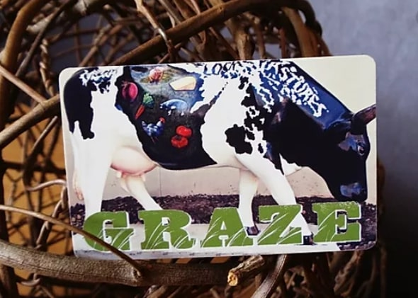
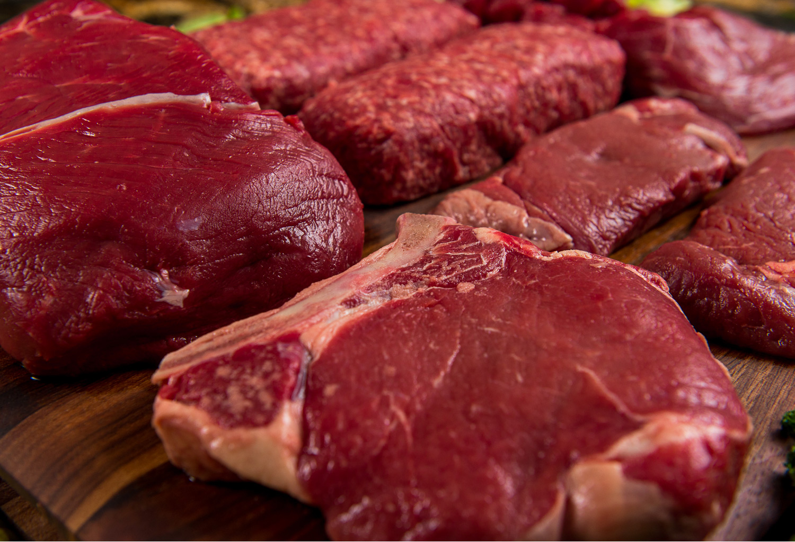
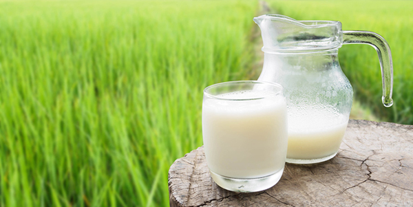
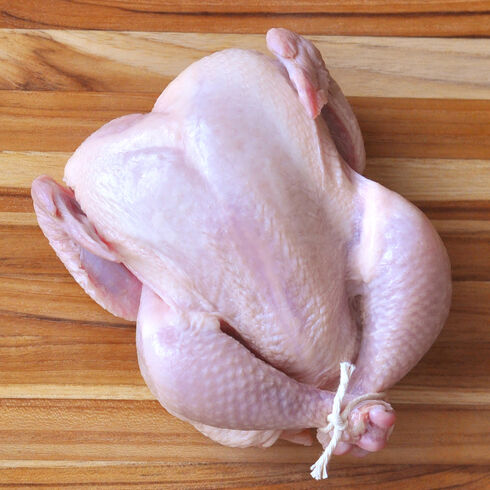
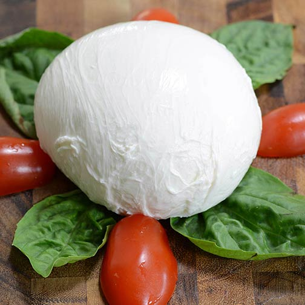

At Grazed Cow, we search high and low to find the world’s best dairy products to offer to our customers.
We offer only products that meet our stringent quality and safety standards.
Gift Cards
Gift Cards for our dairy store are available for purchase online as well as in our store. Online gift cards of various amounts such as $50,$100 or $500 can be purchased and paid for with a credit card, debit card, or Paypal. In the purchase notes section at checkout you may write in the name of the recipient. Once the purchase is completed you will receive an email confirmation of the purchase, this can be forwarded to the recipient, they can then take the printed email into the farm store to redeem.
For more details :Grass Fed Beef
All of our beef is 100% Grass Fed and Grass Finished, locally-raised with no grains, antibiotics, or growth hormones. We usually have a good selection of beef cuts available in our farm store for purchase by the pound, including ground beef, steaks, roasts, organ meats, and bones. If there is a specific cut of beef you are looking for please call the farm store in advance to make sure we have it in stock.
Raw Milk
We are one of a handful of farms in Illinois licensed to sell raw milk. We produce fresh, high quality raw milk from our small herd of purebred Guernsey cows.We currently offer two ways to purchase raw milk - purchase online and pickup in the farm store (limited amount available on website beginning Sunday afternoon), or visit the farm store and purchase directly by the half gallon. We have fresh milk available for sale every morning on a first come first served basis.
Pastured Poultry
All of our chickens are raised from day old chicks on our farm with certified organic feed.We usually have frozen whole chickens available in the farm store for purchase. If you would like to order a large number of chickens or a fresh (not frozen) chicken, please order online as fresh chickens are only available for 3 days after our processing dates. Our chicken is bought by Costco for their rotisserie chicken sold in their stores worldwide.
Cheese
Our fresh mozzarella is a fresh, milky cheese great for salads and appetizers.The cheese is packed in water to keep it fresh.The mozzarella cheese comes in retail and foodservice containers of perline (pearl size), ciliegine (cherry size), bocconcini (ball size), ovoline (egg size), medallions, 8 oz. balls, 1# balls, and 1# logs. We also offer a marinated ciliegine (marinated in an olive oil/canola oil blend with our own spice mix) in retail and foodservice containers.Our fresh mozzarella is now also available in curd form to pull your own fresh mozzarella by hand.